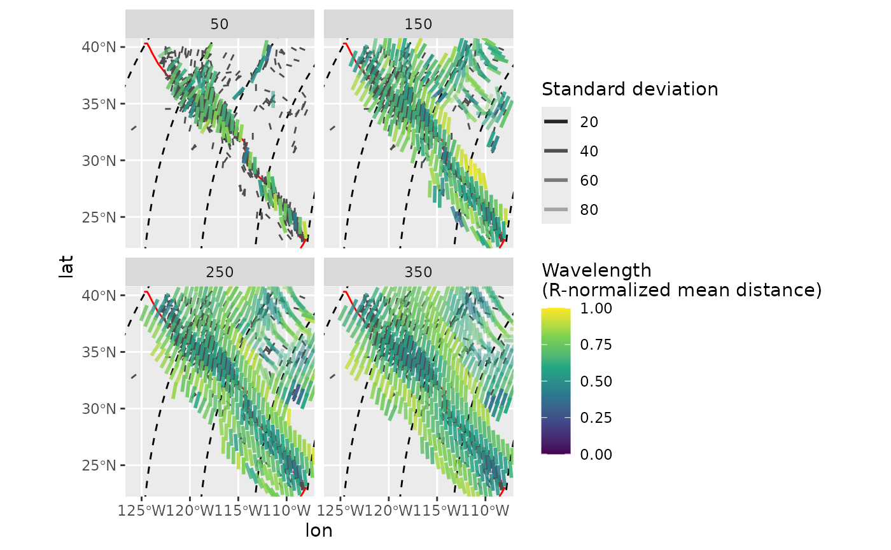
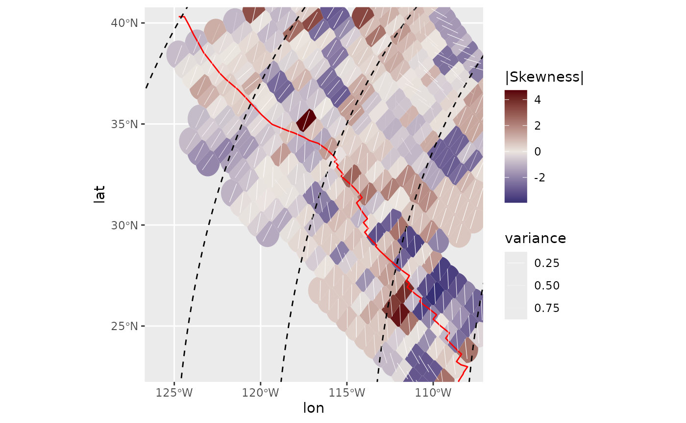
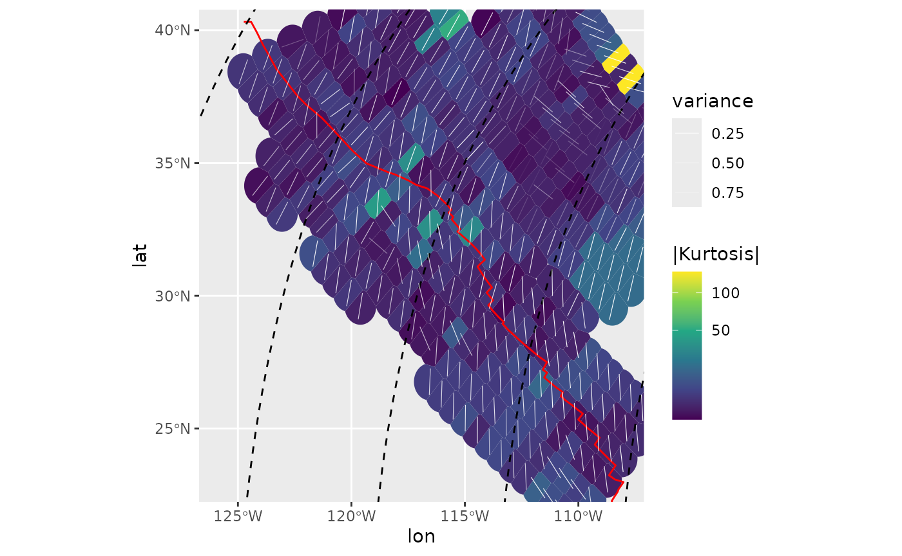

This vignette demonstrates some additional spatially interpolated statistics of a stress field.
data("san_andreas")
data("cpm_models")
por <- cpm_models[["NNR-MORVEL56"]] |>
equivalent_rotation("na", "pa")
plate_boundary <- subset(plates, plates$pair == "na-pa")circular_summary() yields several statistics estimates
for a given vector of angles, such as mean, median, standard deviation,
quasi-quantiles, mode, 95% confidence angle, as wells as the moments (,
i.e. 2nd moment = variance, 3rd = skewness, 4th = kurtosis):
circular_summary(san_andreas$azi, w = weighting(san_andreas$unc))
#> n mean sd var 25% quasi-median
#> 1126.0000000 10.8538228 23.8438493 0.2927477 15.0000000 35.5357179
#> 75% median CI skewness kurtosis R
#> 160.0000000 9.0000000 5.7737140 -0.2710770 1.1239222 0.7072523Spatial analysis
Spatial analysis and interpolation of stress data using
stress2grid_stats() or PoR_stress2grid_stats()
(analysis in the PoR coordinate system) uses a moving window with a user
defined cell-size (im km) and calculates the summary statistics within
each cell:
spatial_stats_R <- PoR_stress2grid_stats(san_andreas, PoR = por, gridsize = 1, R_range = 100)
subset(spatial_stats_R, !is.na(mean)) |> head()
#> Simple feature collection with 6 features and 23 fields
#> Geometry type: POINT
#> Dimension: XY
#> Bounding box: xmin: -110.8569 ymin: 34.99224 xmax: -107.9222 ymax: 39.97615
#> Geodetic CRS: WGS 84
#> lon.PoR lat.PoR mean.PoR sd var 25%.PoR quasi-median.PoR
#> 24 84.83339 -61.15394 62.49110 34.19146 0.5094509 45.83768 70.68846
#> 25 85.83339 -61.15394 79.28662 37.82152 0.5816725 70.68846 70.68846
#> 26 86.83339 -61.15394 112.88278 55.51173 0.8470109 53.79210 90.72089
#> 35 75.83339 -60.15394 146.61405 24.94924 0.3156098 148.14101 150.90749
#> 42 82.83339 -60.15394 71.36347 18.55806 0.1892709 67.77922 73.54519
#> 43 83.83339 -60.15394 80.79428 24.57849 0.3079105 49.43459 76.92189
#> 75%.PoR median.PoR CI skewness kurtosis meanR R N
#> 24 70.68846 70.68846 180.00000 -1.7582271 1.3664213 0.4905491 100 5
#> 25 127.81138 80.70468 180.00000 -1.6526557 -1.5511149 0.4183275 100 4
#> 26 127.81138 90.72089 180.00000 0.7532090 -0.8523197 0.1529891 100 5
#> 35 157.91252 151.01426 142.32537 2.0902540 2.8515751 0.6843902 100 4
#> 42 95.51644 72.35056 76.92846 0.5162450 -1.9988085 0.8107291 100 4
#> 43 80.57092 76.92189 94.92920 0.1517067 -1.6394874 0.6920895 100 5
#> mdr geometry lat lon mean 25%
#> 24 0.6719937 POINT (-110.1257 39.15542) 39.15542 -110.1257 120.10119 103.44777
#> 25 0.1758576 POINT (-110.4569 39.56431) 39.56431 -110.4569 137.56260 128.96443
#> 26 0.6370203 POINT (-110.7839 39.97615) 39.97615 -110.7839 171.82553 112.73485
#> 35 0.6239140 POINT (-107.9222 34.99224) 34.99224 -107.9222 17.70425 19.23121
#> 42 0.6932675 POINT (-110.5034 37.78685) 37.78685 -110.5034 126.99513 123.41089
#> 43 0.6433647 POINT (-110.8569 38.19922) 38.19922 -110.8569 137.07570 105.71601
#> quasi-median 75% median
#> 24 128.29855 128.298547 128.29855
#> 25 128.96443 6.087356 138.98065
#> 26 149.66364 6.754129 149.66364
#> 35 21.99769 29.002725 22.10446
#> 42 129.17685 151.148106 127.98222
#> 43 133.20331 136.852339 133.20331One can also specify a range of cell-sizes for a wavelength analysis:
spatial_stats <- PoR_stress2grid_stats(san_andreas, PoR = por, gridsize = 1, R_range = seq(50, 350, 100), mode = TRUE)The mean azimuth for each grid cell:
trajectories <- eulerpole_loxodromes(x = por, n = 40, cw = FALSE)
ggplot(spatial_stats) +
geom_sf(data = plate_boundary, color = "red") +
geom_sf(data = trajectories, lty = 2) +
geom_azimuth(data = san_andreas, aes(lon, lat, angle = azi), radius = .17, linewidth = .5, color = "grey30") +
geom_azimuth(aes(lon, lat, angle = mean, alpha = sd, color = mdr), radius = .5, lwd = 1) +
coord_sf(xlim = range(san_andreas$lon), ylim = range(san_andreas$lat)) +
scale_alpha(name = "Standard deviation", range = c(1, .25)) +
scale_color_viridis_c(
"Wavelength\n(R-normalized mean distance)",
limits = c(0, 1),
breaks = seq(0, 1, .25)
) +
facet_wrap(~R)
To filter the range of search windows to only keep the shortest wavelength (R) with the least variance for each grid cell, use compact_grid2().
spatial_stats_comp <- spatial_stats |>
compact_grid2(var)Interpolated median stress field color-coded by the skewness within each search window:
ggplot(spatial_stats_comp) +
geom_sf(data = plate_boundary, color = "red") +
geom_sf(data = trajectories, lty = 2) +
geom_azimuth(data = san_andreas, aes(lon, lat, angle = azi), radius = .15, color = "grey30") +
geom_azimuth(aes(lon, lat, angle = median, alpha = CI, color = skewness), radius = .25, lwd = 1) +
coord_sf(xlim = range(san_andreas$lon), ylim = range(san_andreas$lat)) +
scale_alpha(name = "95% CI", range = c(1, .25)) +
scale_color_viridis_c(
"Skewness"
)
#> Warning: Duplicated aesthetics after name standardisation: radius
#> Duplicated aesthetics after name standardisation: radiusInterpolated mode of the stress field color-coded by the absolute kurtosis within each search window:
ggplot(spatial_stats_comp) +
geom_sf(data = plate_boundary, color = "red") +
geom_sf(data = trajectories, lty = 2) +
geom_azimuth(data = san_andreas, aes(lon, lat, angle = azi), radius = .15, color = "grey30") +
geom_azimuth(aes(lon, lat, angle = mode, alpha = CI, color = abs(kurtosis)), radius = .25, lwd = 1) +
coord_sf(xlim = range(san_andreas$lon), ylim = range(san_andreas$lat)) +
scale_alpha(name = "95% CI", range = c(1, .25)) +
scale_color_viridis_c(
"|Kurtosis|"
)
#> Warning: Duplicated aesthetics after name standardisation: radius
#> Duplicated aesthetics after name standardisation: radius
Heat maps for the spatial statistics
PoR_stress2grid_stats() and
stress2grid_stats() allow to create heatmaps showing the
spatial patterns of any desired statistical estimate (from
circular_summary()). Some examples:
Spatial central moments
Spatial variance
ggplot(spatial_stats_comp) +
ggforce::geom_voronoi_tile(
aes(lon, lat, fill = var),
max.radius = .7, normalize = FALSE
) +
scale_fill_viridis_c(limits = c(0, 1)) +
geom_sf(data = plate_boundary, color = "red") +
geom_sf(data = trajectories, lty = 2) +
geom_azimuth(
aes(lon, lat, angle = mean),
radius = .25, lwd = .2, colour = "white"
) +
coord_sf(xlim = range(san_andreas$lon), ylim = range(san_andreas$lat))
Skewness:
Skewness is a measure for the asymmetry of the probability distribution. It can be either counterclockwise or clockwise skewed, hence values can range between negative and positive numbers, respectively. This can be best visualized in a diverging color-sequence:
ggplot(spatial_stats_comp) +
ggforce::geom_voronoi_tile(
aes(lon, lat, fill = skewness),
max.radius = .7, normalize = FALSE
) +
scale_fill_gradient2("|Skewness|", low = "#001260", mid = "#EBE5E0", high = "#590007") +
geom_sf(data = plate_boundary, color = "red") +
geom_sf(data = trajectories, lty = 2) +
geom_azimuth(
aes(lon, lat, angle = median, alpha = var),
radius = .2, lwd = .2, colour = "white"
) +
scale_alpha("variance", range = c(1, 0)) +
coord_sf(xlim = range(san_andreas$lon), ylim = range(san_andreas$lat))
Kurtosis
Kurtosis is a measure of the “tailedness” of the probability distribution. Here, colors are in a square-root scale:
ggplot(spatial_stats_comp) +
ggforce::geom_voronoi_tile(
aes(lon, lat, fill = abs(kurtosis)),
max.radius = .7, normalize = FALSE
) +
scale_fill_viridis_c("|Kurtosis|", transform = "sqrt") +
geom_sf(data = plate_boundary, color = "red") +
geom_sf(data = trajectories, lty = 2) +
geom_azimuth(
aes(lon, lat, angle = mode, alpha = var),
radius = .25, lwd = .2, colour = "white"
) +
scale_alpha("variance", range = c(1, 0)) +
coord_sf(xlim = range(san_andreas$lon), ylim = range(san_andreas$lat))
Kernel dispersion
Another way to analyse spatial misfits is the kernel dispersion,
i.e. the local dispersion within a user-defined window (kernel). The
kernel´s half width can be a single number (km) or a range of widths.
The latter requires to compact the grid result (x) to find
the smallest kernel size containing the the least dispersion
(compact_grid(x, 'dispersion')).
It is recommended to calculate the kernel dispersion on PoR transformed data to avoid angle distortions due to projections.
san_andreas_por <- san_andreas
san_andreas_por$azi <- PoR_shmax(san_andreas, por, "right")$azi.PoR # transform to PoR azimuth
san_andreas_por$prd <- 135 # test direction
san_andreas_kdisp <- kernel_dispersion(san_andreas_por, gridsize = 1, R_range = seq(50, 350, 100))
san_andreas_kdisp <- compact_grid(san_andreas_kdisp, "dispersion")
ggplot(san_andreas_kdisp) +
ggforce::geom_voronoi_tile(
aes(lon, lat, fill = stat),
max.radius = .7, normalize = FALSE
) +
scale_fill_viridis_c("Dispersion", limits = c(0, 1)) +
geom_sf(data = trajectories, lty = 2) +
geom_azimuth(
data = san_andreas,
aes(lon, lat, angle = azi, alpha = unc),
radius = .25, lwd = .2, colour = "white"
) +
scale_alpha("Standard deviation", range = c(1, .25)) +
coord_sf(xlim = range(san_andreas$lon), ylim = range(san_andreas$lat))
#> Warning: Duplicated aesthetics after name standardisation:
#> radius